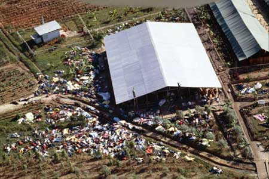

Jonestown
Jonestown is, to date, one of the most horrifying and disturbing notions of human activity and dedication of all time. The story behind it started out like most religious groups or organized parties; and in the end things turned out to be nothing as they seemed. Jim Jones, a local pastor, gathered a large group of his followers and left America to relocate to their own outpost in South America. The idea was freedom, community, and salvation. Below was the result.

The online History database states:
"On November 18, 1978, in what became known as the “Jonestown Massacre,” more than 900 members of an American cult called the Peoples Temple died in a mass suicide-murder under the direction of their leader Jim Jones (1931-78). The mass suicide-murder took place at the so-called Jonestown settlement in the South American nation of Guyana. Jones had founded what became the Peoples Temple in Indiana in the 1950s then relocated his congregation to California in the 1960s. In the 1970s, following negative media attention, the powerful, controlling preacher moved with some 1,000 of his followers to the Guyanese jungle, where he promised they would establish a utopian community. On November 18, 1978, U.S. Representative Leo Ryan, who had gone to Jonestown to investigate claims of abuse, was murdered, along with four members of his delegation, by Jonestown gunmen. That same day, Jones ordered his followers to ingest poison-laced punch, while armed guards stood by."
The background, origins, and further details can also be read on the site. To date, this remains the worst cult tragedy in America and one of the worst of all time worldwide.